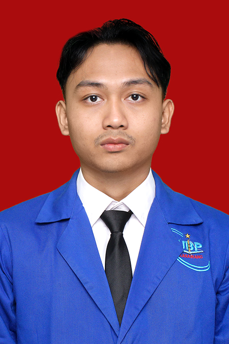

Halo, nama saya —

Tentang Saya
Saya seorang profesional IT dengan ketertarikan mendalam pada kecerdasan buatan dan rekayasa data. Berbekal latar belakang akademik yang kuat, saya senang mengeksplorasi bagaimana algoritma dapat mengubah data mentah menjadi wawasan berharga.
Saya terbiasa melatih model klasifikasi secara mandiri, mengoptimalkan pipeline data, dan mengintegrasikan model AI ke dalam sistem aplikasi yang siap pakai.
Keahlian & Teknologi
Python
core language
Deep Learning
pytorch · tf
Big Data / SQL
pipeline · analytics
Linux Admin
server · deploy
Project
Model Deep Learning dengan Framework YOLOv8 dan arsitektur EfficientNet untuk mengklasifikasikan sampah organik/anorganik. Dilatih dengan dataset asli (bukan cropping) sehingga generalisasi lebih baik.
Sistem klasifikasi teks dengan teknik NLP untuk mengelompokkan komentar YouTube ke sentimen positif/negatif. Melibatkan cleansing, case folding, tokenizing, stopword removal, dan stemming.
Sistem Automatic Number Plate Recognition (ANPR) menggunakan YOLOv8 untuk mendeteksi plat secara real-time, lalu diintegrasikan dengan Image Processing dan OCR.
Otomatisasi berbasis kamera untuk mendeteksi, mengklasifikasikan, dan menghitung jumlah telur real-time. Menggunakan YOLOv8 dengan tracking dan line counter untuk konveyor industri.
Kontak
Saya selalu terbuka untuk diskusi project, peluang kerja, atau bertukar pikiran tentang AI dan teknologi.
mrizkyramd@gmail.com